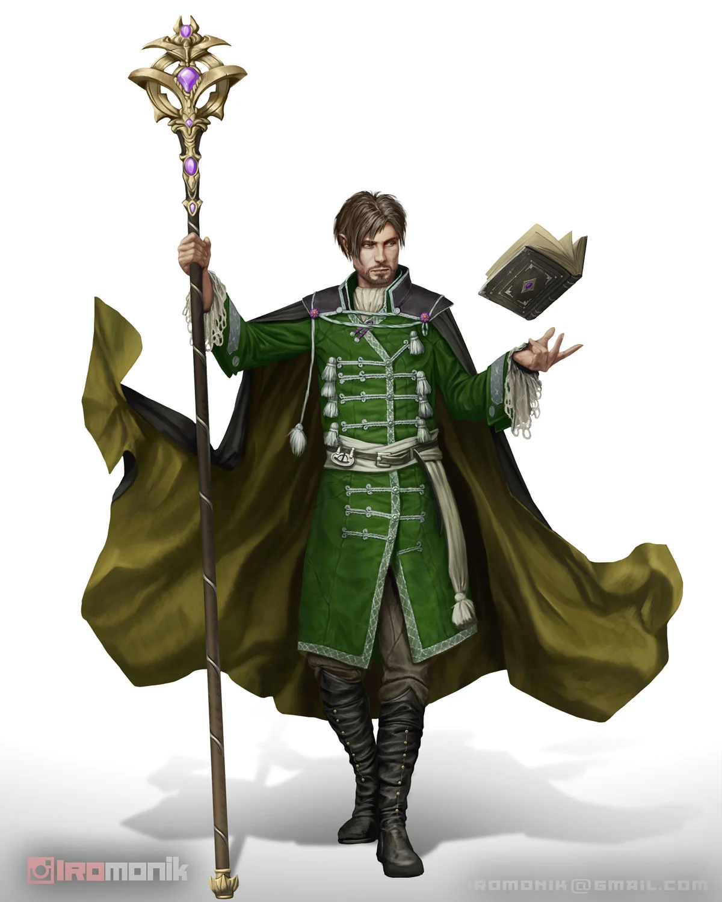
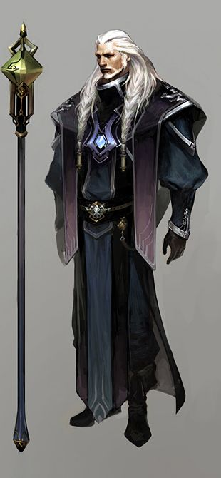
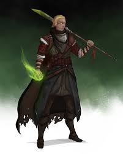
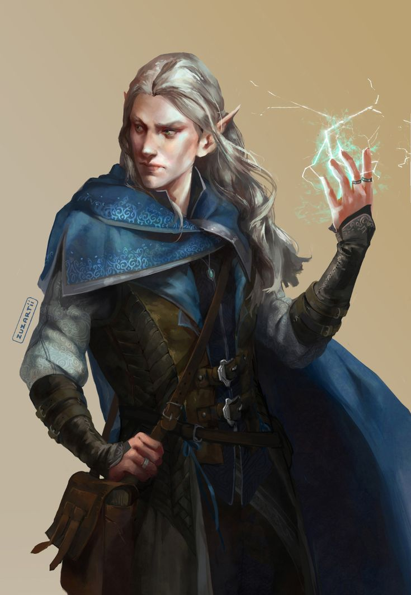

Viktiga NPCs>
Alla dessa är möjliga gissningar för Masqurade, and dont question diffrent artstyles for these pictures, that is not the point of this.
Portekh Lautic, nuvarande kung av Nerou. Har tre yngre bröder, två av dem ska delta i Wargames

Adam Sirg, nuvarande högsta rådgivare till kungen, (tänk hand of the King GoT), har en son som deltar i Wargames

Snae Elaerac, äldsta son till Louc Elaerac, sågs senast vid slaget vid Dol Mortis.

Sam Elarac näst äldsta son till Louc. Nuvarande ledare för house Elarac.

Pourekhnu, Platinum dragon, Exulars
Velag, fler hövdad dragon, Exulars
Cheraux, cristal dragon, Exulars, för stunden en dracolich.